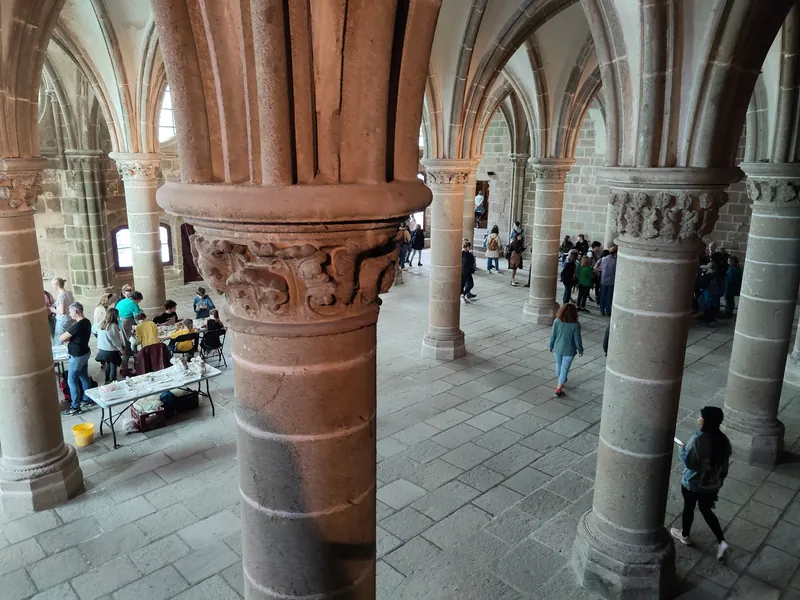

O Mont-Saint-Michel são treze séculos reunidos numa só rocha de granito: a visão de um bispo, um mosteiro beneditino, uma «Maravilha» gótica sobre o precipício, uma fortaleza que os ingleses nunca tomaram, uma prisão e, por fim, um dos monumentos mais visitados de França. A sua história está cheia de lendas, que fazem parte do lugar — mas os factos não são menos surpreendentes. Aqui, em resumo e por ordem: o que aconteceu de verdade, onde começa a lenda e o que ainda se pode ver hoje.
A história vale a pena ler antes da viagem, mas no local, junto às próprias muralhas, ganha mais vida. O audioguia autónomo da TouringBee pela ilha conta estas histórias no caminho da porta da vila até à abadia: 17 paragens, um mapa offline e histórias que inicia você mesmo.
Em resumo: a cronologia
| Ano | O que aconteceu |
|---|---|
| 708 | O bispo Aubert de Avranches, segundo a tradição após uma visão do arcanjo Miguel, funda um santuário na rocha do Mont-Tombe |
| 966 | Ricardo I, duque da Normandia, entrega o monte a monges beneditinos |
| Século XI | No topo ergue-se uma igreja abacial românica, assente numa plataforma de criptas |
| 1204 | Incêndio durante a guerra de Filipe II Augusto pela Normandia |
| 1211–1228 | Constrói-se o conjunto gótico de La Merveille («a Maravilha») |
| 1434 | A guarnição repele o assalto inglês decisivo; a fortaleza nunca é tomada na Guerra dos Cem Anos |
| 1790s–1863 | Depois da Revolução os monges são expulsos e a abadia torna-se prisão |
| 1874 | A abadia é classificada monumento histórico e começa o restauro |
| 1897 | A estátua dourada de São Miguel de Emmanuel Frémiet é colocada no topo da agulha |
| 1979 | O Mont-Saint-Michel e a sua baía tornam-se Património Mundial da UNESCO |
| 2014 | Abre uma nova ponte e o mar volta a poder rodear a ilha |
Como tudo começou: o bispo Aubert e o arcanjo
A história cristã do monte começa com uma lenda. Em 708, o arcanjo Miguel apareceu em sonho a Aubert, bispo da vizinha Avranches, e mandou-o construir um santuário na rocha. Aubert hesitou — e, diz-se, à terceira aparição o arcanjo tocou-lhe na cabeça com o dedo, deixando uma marca. Um crânio com um orifício ainda é guardado na basílica de Saint-Gervais, em Avranches, e mostrado como relíquia. Pense-se o que se pensar, Aubert construiu um pequeno santuário, e a rocha então chamada Mont-Tombe tornou-se o monte de São Miguel.
Logo a seguir vem outra lenda: a rocha teria estado outrora rodeada pela densa floresta de Scissy, que um dia o mar engoliu. É uma bela narrativa e não um facto comprovado — mas explica bem porque, durante séculos, as pessoas viram a baía como um lugar onde o mar e a terra discutem.
Os monges e a Normandia
Em 966, Ricardo I, duque da Normandia, entregou o monte a monges beneditinos, e desde então não foi apenas um santuário mas um ponto importante na fronteira entre a Normandia e a Bretanha. Chegavam doações, livros e peregrinos, e com o tempo a biblioteca do mosteiro tornou-se uma das mais conhecidas da região.
Como construir uma abadia numa rocha afiada
O grande problema técnico era simples e quase impossível: o topo da rocha de granito era estreito e pontiagudo demais para uma grande igreja. Os construtores medievais resolveram-no à sua maneira — construíram à volta do cume igrejas subterrâneas, criptas, e assentaram a igreja românica na plataforma assim criada. A pedra chegava por água, em parte das ilhas Chausey, ao ritmo das marés, e era içada com guindastes. A grande roda de madeira mostrada na abadia é da posterior época da prisão, no século XIX, mas mostra bem como durante séculos se içaram cargas nesta rocha.
A Tapeçaria de Bayeux: areias movediças aos pés do monte
O Mont-Saint-Michel aparece até na famosa Tapeçaria de Bayeux. Na cena da campanha bretã de Guilherme (o futuro Conquistador), o exército atravessa o rio Couesnon aos pés do monte, e Haroldo tira vários soldados das areias movediças. É uma das imagens mais antigas desses perigos da baía contra os quais ainda hoje se avisa. Para percorrer a baía em segurança hoje, veja o nosso guia para atravessar a baía.

La Merveille: uma maravilha gótica depois do incêndio
Em 1204, durante a guerra do rei de França Filipe II Augusto pela Normandia, o mosteiro ficou muito danificado por um incêndio. A reconstrução deu origem a um dos edifícios mais ousados do seu tempo — La Merveille, três pisos góticos assentes diretamente na encosta norte da rocha. Em baixo alimentavam-se os peregrinos pobres e guardavam-se provisões; no meio recebiam-se os hóspedes ilustres e trabalhavam os monges; em cima ficam o refeitório e o claustro, um jardim-galeria que parece suspenso sobre o vazio. Como é por dentro e como entrar, no nosso guia de bilhetes da abadia.
Peregrinos: os miquelots e o caminho pela baía
Durante mil anos, o Mont-Saint-Michel foi um dos grandes centros de peregrinação do Ocidente cristão. Os seus peregrinos chamavam-se miquelots. Muitos faziam o último troço a pé pelo leito do mar na maré baixa — e era realmente perigoso: nevoeiro, maré rápida e areias movediças. Por isso guiar na baía é uma profissão aqui há séculos. Nos séculos XIV e XV chegaram ao monte até grupos de crianças e adolescentes; estas peregrinações são bem conhecidas pelas crónicas medievais.
A fortaleza que nunca caiu
Durante a Guerra dos Cem Anos, o Mont-Saint-Michel foi fortificado com muralhas e torres. Quando quase toda a Normandia tinha caído nas mãos dos ingleses, o monte resistiu. O assalto decisivo foi repelido em 1434: segundo a tradição, a fortaleza era defendida por 119 cavaleiros comandados por Louis d'Estouteville. Os ingleses retiraram-se e deixaram sob as muralhas duas enormes bombardas — as michelettes — e ainda hoje se veem canhões ingleses à entrada da vila. A fortaleza nunca foi tomada em toda a guerra, e para a França o monte tornou-se um símbolo de resistência.
A prisão: a «Bastilha dos mares»
O capítulo mais sombrio começou depois da Revolução Francesa. Os monges foram expulsos e a abadia transformada em prisão, alcunhada a «Bastilha dos mares». Nas salas góticas onde rezavam os monges estiveram presos durante décadas, incluindo presos políticos — entre eles os republicanos Armand Barbès e Auguste Blanqui. A prisão fechou em 1863 por decisão de Napoleão III, mas nessa altura os edifícios estavam muito danificados.
O renascimento: o restauro e o arcanjo na agulha
Em 1874, a abadia foi classificada monumento histórico e começou um longo restauro. Em 1879 construiu-se um dique até à ilha — facilitou o acesso mas, com o tempo, fez assorear a baía. Em 1897, a agulha da abadia foi coroada com a estátua dourada do arcanjo Miguel do escultor Emmanuel Frémiet — a figura que se vê de longe sobre a baía.
O Mont hoje
Em 1979, o Mont-Saint-Michel e a sua baía entraram na lista do Património Mundial da UNESCO. A vida monástica regressou à abadia na segunda metade do século XX; desde 2001 vivem aqui os irmãos e irmãs das Fraternidades Monásticas de Jerusalém, e os seus ofícios diários estão abertos aos visitantes. Em 2014, uma ponte leve sobre estacas substituiu o velho dique: a água volta a circular livremente à volta da rocha, e nas grandes marés o Mont volta a ser uma ilha. Quando e como ver isso, no nosso guia das marés.
Lendas que vale a pena conhecer
- Tombelaine. Segundo uma lenda medieval, o ilhéu vizinho deve o nome ao «túmulo de Helena» — uma jovem morta por um gigante que depois o rei Artur venceu. Vem das crónicas medievais, mas continua viva no nome.
- O cavalo a galope. Diz-se que a maré aqui chega «à velocidade de um cavalo a galope». É um exagero: em média, a água avança mais ou menos ao ritmo de uma caminhada rápida. Mas o perigo é real.
- O arcanjo e o dragão. São Miguel é o vencedor do dragão, por isso os seus santuários ficam muitas vezes em lugares altos, cumes e rochas. O Mont-Saint-Michel é o mais famoso de todos.
A história no local
Datas e nomes leem-se facilmente, mas diante da pedra é mais difícil imaginá-los. Na ilha estas histórias ganham vida: a porta por onde passavam os peregrinos, as muralhas diante das quais os ingleses recuaram e, no topo, a abadia onde os monges rezavam e onde mais tarde estiveram presos. O audioguia autónomo da TouringBee conta as histórias da ilha no caminho das portas da vila até à abadia e pelas muralhas — 17 paragens, um percurso de cerca de 2 horas, um mapa GPS offline. As histórias são escritas por historiadores locais e guias experientes, e é você quem as inicia ao chegar a cada local. Um só pagamento, um ano de acesso, 8 línguas. A entrada na abadia não está incluída. Como funciona, na nossa página do audioguia.
Percorra a história da ilha ao seu ritmo
17 paragens, um percurso GPS offline, histórias escritas por historiadores locais — cerca de 2 horas.
Audioguia — a partir de €9,99~2 h de percurso · offline · um só pagamento · um ano de acesso
Perguntas frequentes
Porque foi o Mont-Saint-Michel construído numa rocha no meio de uma baía?
Segundo a tradição, o arcanjo Miguel escolheu o lugar numa visão ao bispo Aubert em 708. Uma rocha isolada servia para um santuário e, mais tarde, para uma fortaleza: as marés e as areias movediças protegiam o acesso.
É verdade que os ingleses nunca tomaram o Mont-Saint-Michel?
Sim. Durante a Guerra dos Cem Anos o monte resistiu a vários cercos, e o assalto decisivo de 1434 foi repelido. As bombardas inglesas abandonadas pelos sitiantes continuam à entrada da vila.
O Mont-Saint-Michel foi uma prisão?
Sim. Depois da Revolução Francesa a abadia foi transformada em prisão, que fechou em 1863. Seguiram-se o restauro e o regresso do monumento ao seu aspeto anterior.
Hoje vivem monges na abadia?
Sim. Desde 2001 vivem na abadia os irmãos e irmãs das Fraternidades Monásticas de Jerusalém; os seus ofícios diários estão abertos aos visitantes.
O que é La Merveille?
Um conjunto gótico do século XIII no lado norte da rocha: três pisos de salas construídos depois do incêndio de 1204, com o claustro e o refeitório no topo.
Continue a explorar
Em conclusão
A história do Mont-Saint-Michel é um caso raro em que lenda e factos não se atrapalham: a visão de um bispo e um crânio furado, uma solução técnica para uma rocha afiada, uma Maravilha sobre o precipício, uma fortaleza invicta e décadas como prisão. Tudo isto ainda se vê na ilha — basta saber para onde olhar. Leia a cronologia antes de ir e, no local, percorra a ilha com todas as suas histórias, ao seu ritmo.
Alguns links nesta página levam ao nosso produto, o audioguia TouringBee. Veja a nossa divulgação de afiliação.